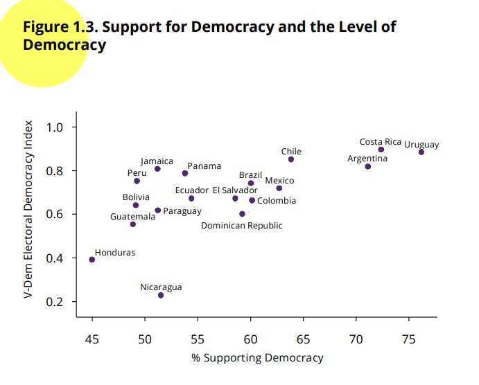
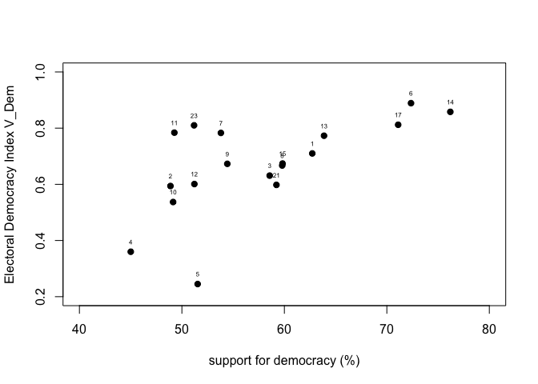
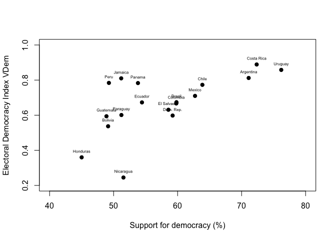
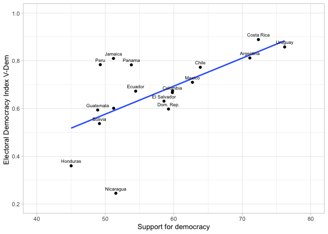

Introducction
The previous sections corresponding to the t-test
and to the ANOVA
test are about the relationship of a numerical variable with a
categorical variable, in such a way that the goal is to compare and
extrapolate the means of the numerical variable by groups of the
categorical variable. In the section about cross-tables
we analyze bivariate relationships between two categorical variables (or
factor variables in R terminology). This evaluation is done using
cross-tables (or contingency tables) and is evaluated using the
chi-square test.
In this section we will look at the bivariate relationship between
two numerical variables, using a scatterplot for visual inspection and
Pearson’s correlation coefficient for evaluation.
About the dataset
The data we are going to use should be cited as follows: Source:
AmericasBarometer by the Latin American Public Opinion Project (LAPOP),
wwww.LapopSurveys.org. You can download the data freely here.
This document reloads a trimmed database, originally in SPSS (.sav)
format. It is recommended to clean the Environment before starting this
section.
library(rio)
lapop18 = import("https://raw.github.com/lapop-central/materials_edu/main/LAPOP_AB_Merge_2018_v1.0.sav")
lapop18 = subset(lapop18, pais<=35)
We also load the data for the 2021 round.
lapop21 = import("https://raw.github.com/lapop-central/materials_edu/main/lapop21.RData")
lapop21 = subset(lapop21, pais<=35)
Support for democracy and level of democracy
In this section we will continue to use the report The Pulse of
Democracy, available here,
where the main findings of the 2018/19 round of the AmericasBarometer
are presented. In this report, Figure 1.3 is presented. This is a
scatterplot that relates the variable support for democracy (from the
AmericasBarometer) to the Electoral Democracy Index from the project V-Dem. This figure shows “the
relationship between the level of support for democracy and the rating
of democracy in each country” (p. 12).

To reproduce this figure, we must add the results of the variable
ING4 by country. ING4. “Changing the subject, democracy may have
problems, but it is better than any other form of government. To what
extent do you agree or disagree with this statement?” People could
respond on a scale of 1 to 7, where 1 means “strongly disagree” and 7
means “strongly agree.” The report indicates that the original question
is recoded into a dummy variable, where responses between 5 and 7 are
considered supporters of democracy. The X-axis of Figure 1.3 shows the
percentage of people who support democracy by country (that is, those
who answer between 5 and 7 in each country).
Then, on the V-Dem project website, we can calculate the Electoral
Democracy Index scores for each country (see here). So,
data can be collected for the 18 countries that are part of the report
“The Pulse of Democracy”. This data can then be downloaded in .csv
format. The Y-axis of Figure 1.3 shows the V-Dem Electoral Democracy
Index scores on a scale of 0 to 1. For this section, data from the 2018
and 2019 Electoral Democracy Index have been collected for the 18
countries analyzed in the report, including the country code, in order
to merge the data later. This dataset is also hosted in the
“materials_edu” repository of the LAPOP account on GitHub. We load the
data.
vdem = import("https://raw.github.com/lapop-central/materials_edu/main/vdem.xlsx")
vdem
To reproduce Figure 1.3 we have to recode the variable ING4 according
to the rule indicated in the report:
library(car)
lapop18$support = car::recode(lapop18$ing4, "1:4=0; 5:7=100")
table(lapop18$support)
##
## 0 100
## 11463 15623
With this new variable “support”, we now have to add the data of this
variable by country and save this information in a new dataframe “df”.
For this we will use the command summarySE that reports the
descriptive statistics of the “support” variable by country. The N of
each country, the average (which would be the percentage), the standard
deviation, the standard error and the size of the confidence interval
are included. In this case we only require the data on average. Looking
at the table, we see that Uruguay is the country that reports a higher
proportion of citizens who support democracy and also has the lowest
standard deviation, indicating that there is greater homogeneity of
opinions compared to the other 17 countries.
library(Rmisc) #para poder utilizar el comando summarySE
df = summarySE(data=lapop18, measurevar="support", groupvar="pais", na.rm=T)
df
We then use the data from the “vdem2019” column of the “vdem”
dataframe to add these data to “df”. We do this with the
cbind command, where the destination dataframe “df” and the
data to de added are indicated, that is vdem$vdem2019. The
added column is renamed because by default it is named as the
variable.
df = cbind(df, vdem$vdem2019)
colnames(df)[7] = "vdem2019"
df
Diagram of Dispersion
In the dataframe “df” we now have the two variables that are plotted
in the scatterplot presented in Figure 1.3. We can replicate this figure
with the plot command, where the variable that will go on
the X axis is indicated and then the one that will go on the Y axis. The
axes are labeled with xlab and ylab. Axis
limits are set with xlim and ylim. The labels
of each point are added with the text command, where it is
indicated to add the label of the variable df$pais.
plot(df$support, df$vdem2019,
xlab="support for democracy (%)",
ylab="Electoral Democracy Index V_Dem",
pch=19, xlim=c(40, 80), ylim=c(0.2, 1))
text(df$support, df$vdem2019, labels=df$pais, cex=0.5, pos=3)

However, these labels display the country codes. To display the
country names, we have to transform the variable “pais” into a factor
variable “paises” and label with the names.
df$country = as.factor(df$pais)
levels(df$country) = c("Mexico", "Guatemala", "El Salvador", "Honduras", "Nicaragua",
"Costa Rica", "Panama", "Colombia", "Ecuador", "Bolivia", "Peru",
"Paraguay", "Chile", "Uruguay", "Brazil", "Argentina", "Dom. Rep.",
"Jamaica")
table(df$country)
##
## Mexico Guatemala El Salvador Honduras Nicaragua Costa Rica
## 1 1 1 1 1 1
## Panama Colombia Ecuador Bolivia Peru Paraguay
## 1 1 1 1 1 1
## Chile Uruguay Brazil Argentina Dom. Rep. Jamaica
## 1 1 1 1 1 1
With this new variable we can redo the scatter plot with the country
labels.
plot(df$support, df$vdem2019,
xlab="Support for democracy (%)",
ylab="Electoral Democracy Index VDem",
pch=19, xlim=c(40, 80), ylim=c(0.2, 1))
text(df$support, df$vdem2019, labels=df$country, cex=0.5, pos=3)

This same plot can also be reproduced using the library
ggplot. First, we define the aesthetics of the graph, that
is, the dataframe, which will be “df”, and with the specification
aes, the variables on each axis of the figure. With the
command geom_point we indicate that we want to produce a
point graph. One element we can add is the prediction or smooth line,
with the command geom_smooth. Within this command it is
specified that the linear method is used with method=lm and
that the confidence interval around the prediction line is not displayed
with se=F. Then, with the command geom_text,
the labels are included for each point, from the variable “country”. The
specification nudge_y is used to wrap labels vertically and
check_overlap=T to prevent labels from overlapping.
Finally, the axes are labeled with labs(...), a general
theme of the graph is defined, with theme_light() and the
limits of the axes are defined.
library(ggplot2)
ggplot(df, aes(x=support, y=vdem2019))+
geom_point()+
geom_smooth(method=lm, se=F)+ #add trend line
geom_text(data=df, aes(label=country), cex=2.5, nudge_y = 0.02, check_overlap = T)+ #To label the points, give them a size, location and prevent them from overlapping
labs(x="Support for democracy", y="Electoral Democracy Index V-Dem ")+ #To label the axes
theme_light()+
xlim(40, 80)+
ylim(0.2, 1)

As presented in the figure, the distribution of the countries can be
summarized with a linear approximation using a straight line. This
straight line has a positive slope, which indicates that there is a
direct relationship between both variables: as a country exhibits a
higher percentage of citizens who support democracy, a higher score is
observed in the electoral democracy index.
Pearson´s Correlation Coefficient
To evaluate the magnitude of the replationship between both
variables, a statistical measure can be added, the Pearsons´s R
correlation coefficient. This coefficient varies between -1 to +1. The
sign indicates the direction of the relationship, while the value
indicates the degree of the relationship. If the coefficient is 0, this
indicates an absence of a linear relationship and the closer it is to 1,
the greater the linear relationship between the variables.
The report indicates that “in general, there is a positive
relationship between the two measures (Pearson’s correlation =.64).
Although this analysis is descriptive and does not test a causal
relationship, the pattern is consistent with previous investigations
where it is identified that citizen support for democracy is a central
ingredient for the vitality of democracy”.
The command cor.test can be used to calculate the value
of Pearson’s coefficient. Within this command, it is indicated which
variable is located on each axis. By default, the Pearson coefficient is
calculated, but with the specification method="...", the
Kendall or Spearman coefficient can also be calculated.
cor.test(x = df$support, y = df$vdem2019)
##
## Pearson's product-moment correlation
##
## data: df$support and df$vdem2019
## t = 3.2105, df = 16, p-value = 0.005456
## alternative hypothesis: true correlation is not equal to 0
## 95 percent confidence interval:
## 0.2247472 0.8456754
## sample estimates:
## cor
## 0.6259389
A coefficient of 0.62 is obtained, which indicates a positive
relationship, although the exact value is not the same as that reported
in the report because the calculations made in this section do not take
into account the effect of survey weights.
Summary
In this section we have worked on the bivariate relationship between
two numerical variables. The visualization of this relationship has been
done through the diagram of dispersion and the evaluation of the
relationship has been done through the Pearson´s correlation
coefficient.
This is a first step in modeling. In the following sections, modeling
will be introduced using the simple linear regression technique, which
is a mathematical expression of what has been seen in this section.
LS0tCnRpdGxlOiAiQ29ycmVsYXRpb24gd2l0aCB0aGUgQW1lcmljYXNCYXJvbWV0ZXIiCm91dHB1dDoKICBodG1sX2RvY3VtZW50OgogICAgdG9jOiB0cnVlCiAgICB0b2NfZmxvYXQ6IHRydWUKICAgIGNvbGxhcHNlZDogZmFsc2UKICAgIG51bWJlcl9zZWN0aW9uczogZmFsc2UKICAgIHRvY19kZXB0aDogMQogICAgY29kZV9kb3dubG9hZDogdHJ1ZQogICAgdGhlbWU6IGZsYXRseQogICAgZGZfcHJpbnQ6IHBhZ2VkCiAgICBzZWxmX2NvbnRhaW5lZDogbm8KICAgIGtlZXBfbWQ6IHllcwplZGl0b3Jfb3B0aW9uczogCiAgbWFya2Rvd246IAogICAgd3JhcDogc2VudGVuY2UKLS0tCgpgYGB7ciBzZXR1cCwgaW5jbHVkZT1GQUxTRX0Ka25pdHI6Om9wdHNfY2h1bmskc2V0KG1lc3NhZ2U9RkFMU0Usd2FybmluZz1GQUxTRSwgY2FjaGU9VFJVRSkKYGBgCgpgYGB7Y3NzIGNvbG9yLCBlY2hvPUZBTFNFfQouY29sdW1ucyB7ZGlzcGxheTogZmxleDt9CmgxIHtjb2xvcjogIzMzNjZDQzt9CmBgYAoKIyBJbnRyb2R1Y2N0aW9uCgpUaGUgcHJldmlvdXMgc2VjdGlvbnMgY29ycmVzcG9uZGluZyB0byB0aGUgW3QtdGVzdF0oaHR0cHM6Ly9hcnR1cm9tYWxkb25hZG8uZ2l0aHViLmlvL0Jhcm9tZXRyb0VkdV9XZWJfRW5nL3R0ZXN0Lmh0bWwpIGFuZCB0byB0aGUgW0FOT1ZBIHRlc3RdKGh0dHBzOi8vYXJ0dXJvbWFsZG9uYWRvLmdpdGh1Yi5pby9CYXJvbWV0cm9FZHVfV2ViX0VuZy9hbm92YS5odG1sKSBhcmUgYWJvdXQgdGhlIHJlbGF0aW9uc2hpcCBvZiBhIG51bWVyaWNhbCB2YXJpYWJsZSB3aXRoIGEgY2F0ZWdvcmljYWwgdmFyaWFibGUsIGluIHN1Y2ggYSB3YXkgdGhhdCB0aGUgZ29hbCBpcyB0byBjb21wYXJlIGFuZCBleHRyYXBvbGF0ZSB0aGUgbWVhbnMgb2YgdGhlIG51bWVyaWNhbCB2YXJpYWJsZSBieSBncm91cHMgb2YgdGhlIGNhdGVnb3JpY2FsIHZhcmlhYmxlLgpJbiB0aGUgc2VjdGlvbiBhYm91dCBbY3Jvc3MtdGFibGVzXShodHRwczovL2FydHVyb21hbGRvbmFkby5naXRodWIuaW8vQmFyb21ldHJvRWR1X1dlYl9FbmcvY2hpLmh0bWwpIHdlIGFuYWx5emUgYml2YXJpYXRlIHJlbGF0aW9uc2hpcHMgYmV0d2VlbiB0d28gY2F0ZWdvcmljYWwgdmFyaWFibGVzIChvciBmYWN0b3IgdmFyaWFibGVzIGluIFIgdGVybWlub2xvZ3kpLgpUaGlzIGV2YWx1YXRpb24gaXMgZG9uZSB1c2luZyBjcm9zcy10YWJsZXMgKG9yIGNvbnRpbmdlbmN5IHRhYmxlcykgYW5kIGlzIGV2YWx1YXRlZCB1c2luZyB0aGUgY2hpLXNxdWFyZSB0ZXN0LgoKSW4gdGhpcyBzZWN0aW9uIHdlIHdpbGwgbG9vayBhdCB0aGUgYml2YXJpYXRlIHJlbGF0aW9uc2hpcCBiZXR3ZWVuIHR3byBudW1lcmljYWwgdmFyaWFibGVzLCB1c2luZyBhIHNjYXR0ZXJwbG90IGZvciB2aXN1YWwgaW5zcGVjdGlvbiBhbmQgUGVhcnNvbidzIGNvcnJlbGF0aW9uIGNvZWZmaWNpZW50IGZvciBldmFsdWF0aW9uLgoKIyBBYm91dCB0aGUgZGF0YXNldAoKVGhlIGRhdGEgd2UgYXJlIGdvaW5nIHRvIHVzZSBzaG91bGQgYmUgY2l0ZWQgYXMgZm9sbG93czogU291cmNlOiBBbWVyaWNhc0Jhcm9tZXRlciBieSB0aGUgTGF0aW4gQW1lcmljYW4gUHVibGljIE9waW5pb24gUHJvamVjdCAoTEFQT1ApLCB3d3d3LkxhcG9wU3VydmV5cy5vcmcuCllvdSBjYW4gZG93bmxvYWQgdGhlIGRhdGEgZnJlZWx5IFtoZXJlXShodHRwOi8vZGF0YXNldHMuYW1lcmljYXNiYXJvbWV0ZXIub3JnL2RhdGFiYXNlL2xvZ2luLnBocCkuCgpUaGlzIGRvY3VtZW50IHJlbG9hZHMgYSB0cmltbWVkIGRhdGFiYXNlLCBvcmlnaW5hbGx5IGluIFNQU1MgKC5zYXYpIGZvcm1hdC4KSXQgaXMgcmVjb21tZW5kZWQgdG8gY2xlYW4gdGhlIEVudmlyb25tZW50IGJlZm9yZSBzdGFydGluZyB0aGlzIHNlY3Rpb24uCgpgYGB7ciBiYXNlfQpsaWJyYXJ5KHJpbykgCmxhcG9wMTggPSBpbXBvcnQoImh0dHBzOi8vcmF3LmdpdGh1Yi5jb20vbGFwb3AtY2VudHJhbC9tYXRlcmlhbHNfZWR1L21haW4vTEFQT1BfQUJfTWVyZ2VfMjAxOF92MS4wLnNhdiIpCmxhcG9wMTggPSBzdWJzZXQobGFwb3AxOCwgcGFpczw9MzUpCmBgYAoKV2UgYWxzbyBsb2FkIHRoZSBkYXRhIGZvciB0aGUgMjAyMSByb3VuZC4KCmBgYHtyfQpsYXBvcDIxID0gaW1wb3J0KCJodHRwczovL3Jhdy5naXRodWIuY29tL2xhcG9wLWNlbnRyYWwvbWF0ZXJpYWxzX2VkdS9tYWluL2xhcG9wMjEuUkRhdGEiKSAKbGFwb3AyMSA9IHN1YnNldChsYXBvcDIxLCBwYWlzPD0zNSkKYGBgCgojIFN1cHBvcnQgZm9yIGRlbW9jcmFjeSBhbmQgbGV2ZWwgb2YgZGVtb2NyYWN5CgpJbiB0aGlzIHNlY3Rpb24gd2Ugd2lsbCBjb250aW51ZSB0byB1c2UgdGhlIHJlcG9ydCAqVGhlIFB1bHNlIG9mIERlbW9jcmFjeSosIGF2YWlsYWJsZSBbaGVyZV0oaHR0cHM6Ly93d3cudmFuZGVyYmlsdC5lZHUvbGFwb3AvYWIyMDE4LzIwMTgtMTlfQW1lcmljYXNCYXJvbWV0ZXJfUmVnaW9uYWxfUmVwb3J0XzEwLjEzLjE5LnBkZiksIHdoZXJlIHRoZSBtYWluIGZpbmRpbmdzIG9mIHRoZSAyMDE4LzE5IHJvdW5kIG9mIHRoZSBBbWVyaWNhc0Jhcm9tZXRlciBhcmUgcHJlc2VudGVkLgpJbiB0aGlzIHJlcG9ydCwgRmlndXJlIDEuMyBpcyBwcmVzZW50ZWQuClRoaXMgaXMgYSBzY2F0dGVycGxvdCB0aGF0IHJlbGF0ZXMgdGhlIHZhcmlhYmxlIHN1cHBvcnQgZm9yIGRlbW9jcmFjeSAoZnJvbSB0aGUgQW1lcmljYXNCYXJvbWV0ZXIpIHRvIHRoZSBFbGVjdG9yYWwgRGVtb2NyYWN5IEluZGV4IGZyb20gdGhlIHByb2plY3QgW1YtRGVtXShodHRwczovL3d3dy52LWRlbS5uZXQvZW4vKS4KVGhpcyBmaWd1cmUgc2hvd3MgInRoZSByZWxhdGlvbnNoaXAgYmV0d2VlbiB0aGUgbGV2ZWwgb2Ygc3VwcG9ydCBmb3IgZGVtb2NyYWN5IGFuZCB0aGUgcmF0aW5nIG9mIGRlbW9jcmFjeSBpbiBlYWNoIGNvdW50cnkiIChwLiAxMikuCgohW10oRmlndXJlMS4zLkpQRyl7d2lkdGg9IjUwNSJ9CgpUbyByZXByb2R1Y2UgdGhpcyBmaWd1cmUsIHdlIG11c3QgYWRkIHRoZSByZXN1bHRzIG9mIHRoZSB2YXJpYWJsZSBJTkc0IGJ5IGNvdW50cnkuCklORzQuCiJDaGFuZ2luZyB0aGUgc3ViamVjdCwgZGVtb2NyYWN5IG1heSBoYXZlIHByb2JsZW1zLCBidXQgaXQgaXMgYmV0dGVyIHRoYW4gYW55IG90aGVyIGZvcm0gb2YgZ292ZXJubWVudC4gVG8gd2hhdCBleHRlbnQgZG8geW91IGFncmVlIG9yIGRpc2FncmVlIHdpdGggdGhpcyBzdGF0ZW1lbnQ/IiBQZW9wbGUgY291bGQgcmVzcG9uZCBvbiBhIHNjYWxlIG9mIDEgdG8gNywgd2hlcmUgMSBtZWFucyAic3Ryb25nbHkgZGlzYWdyZWUiIGFuZCA3IG1lYW5zICJzdHJvbmdseSBhZ3JlZS4iIFRoZSByZXBvcnQgaW5kaWNhdGVzIHRoYXQgdGhlIG9yaWdpbmFsIHF1ZXN0aW9uIGlzIHJlY29kZWQgaW50byBhIGR1bW15IHZhcmlhYmxlLCB3aGVyZSByZXNwb25zZXMgYmV0d2VlbiA1IGFuZCA3IGFyZSBjb25zaWRlcmVkIHN1cHBvcnRlcnMgb2YgZGVtb2NyYWN5LgpUaGUgWC1heGlzIG9mIEZpZ3VyZSAxLjMgc2hvd3MgdGhlIHBlcmNlbnRhZ2Ugb2YgcGVvcGxlIHdobyBzdXBwb3J0IGRlbW9jcmFjeSBieSBjb3VudHJ5ICh0aGF0IGlzLCB0aG9zZSB3aG8gYW5zd2VyIGJldHdlZW4gNSBhbmQgNyBpbiBlYWNoIGNvdW50cnkpLgoKVGhlbiwgb24gdGhlIFYtRGVtIHByb2plY3Qgd2Vic2l0ZSwgd2UgY2FuIGNhbGN1bGF0ZSB0aGUgRWxlY3RvcmFsIERlbW9jcmFjeSBJbmRleCBzY29yZXMgZm9yIGVhY2ggY291bnRyeSAoc2VlIFtoZXJlXShodHRwczovL3d3dy52LWRlbS5uZXQvZW4vYW5hbHlzaXMvVmFyaWFibGVHcmFwaC8pKS4KU28sIGRhdGEgY2FuIGJlIGNvbGxlY3RlZCBmb3IgdGhlIDE4IGNvdW50cmllcyB0aGF0IGFyZSBwYXJ0IG9mIHRoZSByZXBvcnQgIlRoZSBQdWxzZSBvZiBEZW1vY3JhY3kiLgpUaGlzIGRhdGEgY2FuIHRoZW4gYmUgZG93bmxvYWRlZCBpbiAuY3N2IGZvcm1hdC4KVGhlIFktYXhpcyBvZiBGaWd1cmUgMS4zIHNob3dzIHRoZSBWLURlbSBFbGVjdG9yYWwgRGVtb2NyYWN5IEluZGV4IHNjb3JlcyBvbiBhIHNjYWxlIG9mIDAgdG8gMS4KRm9yIHRoaXMgc2VjdGlvbiwgZGF0YSBmcm9tIHRoZSAyMDE4IGFuZCAyMDE5IEVsZWN0b3JhbCBEZW1vY3JhY3kgSW5kZXggaGF2ZSBiZWVuIGNvbGxlY3RlZCBmb3IgdGhlIDE4IGNvdW50cmllcyBhbmFseXplZCBpbiB0aGUgcmVwb3J0LCBpbmNsdWRpbmcgdGhlIGNvdW50cnkgY29kZSwgaW4gb3JkZXIgdG8gbWVyZ2UgdGhlIGRhdGEgbGF0ZXIuClRoaXMgZGF0YXNldCBpcyBhbHNvIGhvc3RlZCBpbiB0aGUgIm1hdGVyaWFsc19lZHUiIHJlcG9zaXRvcnkgb2YgdGhlIExBUE9QIGFjY291bnQgb24gR2l0SHViLgpXZSBsb2FkIHRoZSBkYXRhLgoKYGBge3IgdmRlbX0KdmRlbSA9IGltcG9ydCgiaHR0cHM6Ly9yYXcuZ2l0aHViLmNvbS9sYXBvcC1jZW50cmFsL21hdGVyaWFsc19lZHUvbWFpbi92ZGVtLnhsc3giKQp2ZGVtCmBgYAoKVG8gcmVwcm9kdWNlIEZpZ3VyZSAxLjMgd2UgaGF2ZSB0byByZWNvZGUgdGhlIHZhcmlhYmxlIElORzQgYWNjb3JkaW5nIHRvIHRoZSBydWxlIGluZGljYXRlZCBpbiB0aGUgcmVwb3J0OgoKLSAgIElORzQgdmFsdWVzIGZyb20gMS00ID0gMCBpbiB0aGUgbmV3IHZhcmlhYmxlICJzdXBwb3J0IgoKLSAgIElORzQgdmFsdWVzIGZyb20gNS03ID0gMTAwIGluIHRoZSBuZXcgdmFyaWFibGUgInN1cHBvcnQiCgpgYGB7ciByZWNvfQpsaWJyYXJ5KGNhcikKbGFwb3AxOCRzdXBwb3J0ID0gY2FyOjpyZWNvZGUobGFwb3AxOCRpbmc0LCAiMTo0PTA7IDU6Nz0xMDAiKQp0YWJsZShsYXBvcDE4JHN1cHBvcnQpCmBgYAoKV2l0aCB0aGlzIG5ldyB2YXJpYWJsZSAic3VwcG9ydCIsIHdlIG5vdyBoYXZlIHRvIGFkZCB0aGUgZGF0YSBvZiB0aGlzIHZhcmlhYmxlIGJ5IGNvdW50cnkgYW5kIHNhdmUgdGhpcyBpbmZvcm1hdGlvbiBpbiBhIG5ldyBkYXRhZnJhbWUgImRmIi4KRm9yIHRoaXMgd2Ugd2lsbCB1c2UgdGhlIGNvbW1hbmQgYHN1bW1hcnlTRWAgdGhhdCByZXBvcnRzIHRoZSBkZXNjcmlwdGl2ZSBzdGF0aXN0aWNzIG9mIHRoZSAic3VwcG9ydCIgdmFyaWFibGUgYnkgY291bnRyeS4KVGhlIE4gb2YgZWFjaCBjb3VudHJ5LCB0aGUgYXZlcmFnZSAod2hpY2ggd291bGQgYmUgdGhlIHBlcmNlbnRhZ2UpLCB0aGUgc3RhbmRhcmQgZGV2aWF0aW9uLCB0aGUgc3RhbmRhcmQgZXJyb3IgYW5kIHRoZSBzaXplIG9mIHRoZSBjb25maWRlbmNlIGludGVydmFsIGFyZSBpbmNsdWRlZC4KSW4gdGhpcyBjYXNlIHdlIG9ubHkgcmVxdWlyZSB0aGUgZGF0YSBvbiBhdmVyYWdlLgpMb29raW5nIGF0IHRoZSB0YWJsZSwgd2Ugc2VlIHRoYXQgVXJ1Z3VheSBpcyB0aGUgY291bnRyeSB0aGF0IHJlcG9ydHMgYSBoaWdoZXIgcHJvcG9ydGlvbiBvZiBjaXRpemVucyB3aG8gc3VwcG9ydCBkZW1vY3JhY3kgYW5kIGFsc28gaGFzIHRoZSBsb3dlc3Qgc3RhbmRhcmQgZGV2aWF0aW9uLCBpbmRpY2F0aW5nIHRoYXQgdGhlcmUgaXMgZ3JlYXRlciBob21vZ2VuZWl0eSBvZiBvcGluaW9ucyBjb21wYXJlZCB0byB0aGUgb3RoZXIgMTcgY291bnRyaWVzLgoKYGBge3IgZGZ9CmxpYnJhcnkoUm1pc2MpICNwYXJhIHBvZGVyIHV0aWxpemFyIGVsIGNvbWFuZG8gc3VtbWFyeVNFCmRmID0gc3VtbWFyeVNFKGRhdGE9bGFwb3AxOCwgbWVhc3VyZXZhcj0ic3VwcG9ydCIsIGdyb3VwdmFyPSJwYWlzIiwgbmEucm09VCkKZGYKYGBgCgpXZSB0aGVuIHVzZSB0aGUgZGF0YSBmcm9tIHRoZSAidmRlbTIwMTkiIGNvbHVtbiBvZiB0aGUgInZkZW0iIGRhdGFmcmFtZSB0byBhZGQgdGhlc2UgZGF0YSB0byAiZGYiLgpXZSBkbyB0aGlzIHdpdGggdGhlIGBjYmluZGAgY29tbWFuZCwgd2hlcmUgdGhlIGRlc3RpbmF0aW9uIGRhdGFmcmFtZSAiZGYiIGFuZCB0aGUgZGF0YSB0byBkZSBhZGRlZCBhcmUgaW5kaWNhdGVkLCB0aGF0IGlzIGB2ZGVtJHZkZW0yMDE5YC4KVGhlIGFkZGVkIGNvbHVtbiBpcyByZW5hbWVkIGJlY2F1c2UgYnkgZGVmYXVsdCBpdCBpcyBuYW1lZCBhcyB0aGUgdmFyaWFibGUuCgpgYGB7ciBtZXJnZX0KZGYgPSBjYmluZChkZiwgdmRlbSR2ZGVtMjAxOSkKY29sbmFtZXMoZGYpWzddID0gInZkZW0yMDE5IgpkZgpgYGAKCiMgRGlhZ3JhbSBvZiBEaXNwZXJzaW9uCgpJbiB0aGUgZGF0YWZyYW1lICJkZiIgd2Ugbm93IGhhdmUgdGhlIHR3byB2YXJpYWJsZXMgdGhhdCBhcmUgcGxvdHRlZCBpbiB0aGUgc2NhdHRlcnBsb3QgcHJlc2VudGVkIGluIEZpZ3VyZSAxLjMuCldlIGNhbiByZXBsaWNhdGUgdGhpcyBmaWd1cmUgd2l0aCB0aGUgYHBsb3RgIGNvbW1hbmQsIHdoZXJlIHRoZSB2YXJpYWJsZSB0aGF0IHdpbGwgZ28gb24gdGhlIFggYXhpcyBpcyBpbmRpY2F0ZWQgYW5kIHRoZW4gdGhlIG9uZSB0aGF0IHdpbGwgZ28gb24gdGhlIFkgYXhpcy4KVGhlIGF4ZXMgYXJlIGxhYmVsZWQgd2l0aCBgeGxhYmAgYW5kIGB5bGFiYC4KQXhpcyBsaW1pdHMgYXJlIHNldCB3aXRoIGB4bGltYCBhbmQgYHlsaW1gLgpUaGUgbGFiZWxzIG9mIGVhY2ggcG9pbnQgYXJlIGFkZGVkIHdpdGggdGhlIGB0ZXh0YCBjb21tYW5kLCB3aGVyZSBpdCBpcyBpbmRpY2F0ZWQgdG8gYWRkIHRoZSBsYWJlbCBvZiB0aGUgdmFyaWFibGUgYGRmJHBhaXNgLgoKYGBge3IgcGxvdH0KcGxvdChkZiRzdXBwb3J0LCBkZiR2ZGVtMjAxOSwgCiAgICAgeGxhYj0ic3VwcG9ydCBmb3IgZGVtb2NyYWN5ICglKSIsIAogICAgIHlsYWI9IkVsZWN0b3JhbCBEZW1vY3JhY3kgSW5kZXggVl9EZW0iLCAKICAgICBwY2g9MTksIHhsaW09Yyg0MCwgODApLCB5bGltPWMoMC4yLCAxKSkKdGV4dChkZiRzdXBwb3J0LCBkZiR2ZGVtMjAxOSwgbGFiZWxzPWRmJHBhaXMsIGNleD0wLjUsIHBvcz0zKQpgYGAKCkhvd2V2ZXIsIHRoZXNlIGxhYmVscyBkaXNwbGF5IHRoZSBjb3VudHJ5IGNvZGVzLgpUbyBkaXNwbGF5IHRoZSBjb3VudHJ5IG5hbWVzLCB3ZSBoYXZlIHRvIHRyYW5zZm9ybSB0aGUgdmFyaWFibGUgInBhaXMiIGludG8gYSBmYWN0b3IgdmFyaWFibGUgInBhaXNlcyIgYW5kIGxhYmVsIHdpdGggdGhlIG5hbWVzLgoKYGBge3IgcGFpc30KZGYkY291bnRyeSA9IGFzLmZhY3RvcihkZiRwYWlzKQpsZXZlbHMoZGYkY291bnRyeSkgPSBjKCJNZXhpY28iLCAiR3VhdGVtYWxhIiwgIkVsIFNhbHZhZG9yIiwgIkhvbmR1cmFzIiwgIk5pY2FyYWd1YSIsCiAgICAgICAgICAgICAgICAgICAgICAiQ29zdGEgUmljYSIsICJQYW5hbWEiLCAiQ29sb21iaWEiLCAiRWN1YWRvciIsICJCb2xpdmlhIiwgIlBlcnUiLCAKICAgICAgICAgICAgICAgICAgICAgICJQYXJhZ3VheSIsICJDaGlsZSIsICJVcnVndWF5IiwgIkJyYXppbCIsICJBcmdlbnRpbmEiLCAiRG9tLiBSZXAuIiwgCiAgICAgICAgICAgICAgICAgICAgICAiSmFtYWljYSIpCnRhYmxlKGRmJGNvdW50cnkpCmBgYAoKV2l0aCB0aGlzIG5ldyB2YXJpYWJsZSB3ZSBjYW4gcmVkbyB0aGUgc2NhdHRlciBwbG90IHdpdGggdGhlIGNvdW50cnkgbGFiZWxzLgoKYGBge3IgcGxvdDJ9CnBsb3QoZGYkc3VwcG9ydCwgZGYkdmRlbTIwMTksIAogICAgIHhsYWI9IlN1cHBvcnQgZm9yIGRlbW9jcmFjeSAoJSkiLCAKICAgICB5bGFiPSJFbGVjdG9yYWwgRGVtb2NyYWN5IEluZGV4IFZEZW0iLCAKICAgICBwY2g9MTksIHhsaW09Yyg0MCwgODApLCB5bGltPWMoMC4yLCAxKSkKdGV4dChkZiRzdXBwb3J0LCBkZiR2ZGVtMjAxOSwgbGFiZWxzPWRmJGNvdW50cnksIGNleD0wLjUsIHBvcz0zKQpgYGAKClRoaXMgc2FtZSBwbG90IGNhbiBhbHNvIGJlIHJlcHJvZHVjZWQgdXNpbmcgdGhlIGxpYnJhcnkgYGdncGxvdGAuCkZpcnN0LCB3ZSBkZWZpbmUgdGhlIGFlc3RoZXRpY3Mgb2YgdGhlIGdyYXBoLCB0aGF0IGlzLCB0aGUgZGF0YWZyYW1lLCB3aGljaCB3aWxsIGJlICJkZiIsIGFuZCB3aXRoIHRoZSBzcGVjaWZpY2F0aW9uIGBhZXNgLCB0aGUgdmFyaWFibGVzIG9uIGVhY2ggYXhpcyBvZiB0aGUgZmlndXJlLgpXaXRoIHRoZSBjb21tYW5kIGBnZW9tX3BvaW50YCB3ZSBpbmRpY2F0ZSB0aGF0IHdlIHdhbnQgdG8gcHJvZHVjZSBhIHBvaW50IGdyYXBoLgpPbmUgZWxlbWVudCB3ZSBjYW4gYWRkIGlzIHRoZSBwcmVkaWN0aW9uIG9yIHNtb290aCBsaW5lLCB3aXRoIHRoZSBjb21tYW5kIGBnZW9tX3Ntb290aGAuCldpdGhpbiB0aGlzIGNvbW1hbmQgaXQgaXMgc3BlY2lmaWVkIHRoYXQgdGhlIGxpbmVhciBtZXRob2QgaXMgdXNlZCB3aXRoIGBtZXRob2Q9bG1gIGFuZCB0aGF0IHRoZSBjb25maWRlbmNlIGludGVydmFsIGFyb3VuZCB0aGUgcHJlZGljdGlvbiBsaW5lIGlzIG5vdCBkaXNwbGF5ZWQgd2l0aCBgc2U9RmAuClRoZW4sIHdpdGggdGhlIGNvbW1hbmQgYGdlb21fdGV4dGAsIHRoZSBsYWJlbHMgYXJlIGluY2x1ZGVkIGZvciBlYWNoIHBvaW50LCBmcm9tIHRoZSB2YXJpYWJsZSAiY291bnRyeSIuClRoZSBzcGVjaWZpY2F0aW9uIGBudWRnZV95YCBpcyB1c2VkIHRvIHdyYXAgbGFiZWxzIHZlcnRpY2FsbHkgYW5kIGBjaGVja19vdmVybGFwPVRgIHRvIHByZXZlbnQgbGFiZWxzIGZyb20gb3ZlcmxhcHBpbmcuCkZpbmFsbHksIHRoZSBheGVzIGFyZSBsYWJlbGVkIHdpdGggYGxhYnMoLi4uKWAsIGEgZ2VuZXJhbCB0aGVtZSBvZiB0aGUgZ3JhcGggaXMgZGVmaW5lZCwgd2l0aCBgdGhlbWVfbGlnaHQoKWAgYW5kIHRoZSBsaW1pdHMgb2YgdGhlIGF4ZXMgYXJlIGRlZmluZWQuCgpgYGB7ciBnZ3Bsb3R9CmxpYnJhcnkoZ2dwbG90MikKZ2dwbG90KGRmLCBhZXMoeD1zdXBwb3J0LCB5PXZkZW0yMDE5KSkrCiAgZ2VvbV9wb2ludCgpKwogIGdlb21fc21vb3RoKG1ldGhvZD1sbSwgc2U9RikrICNhZGQgdHJlbmQgbGluZQogIGdlb21fdGV4dChkYXRhPWRmLCBhZXMobGFiZWw9Y291bnRyeSksIGNleD0yLjUsIG51ZGdlX3kgPSAwLjAyLCBjaGVja19vdmVybGFwID0gVCkrICNUbyBsYWJlbCB0aGUgcG9pbnRzLCBnaXZlIHRoZW0gYSBzaXplLCBsb2NhdGlvbiBhbmQgcHJldmVudCB0aGVtIGZyb20gb3ZlcmxhcHBpbmcKICBsYWJzKHg9IlN1cHBvcnQgZm9yIGRlbW9jcmFjeSIsIHk9IkVsZWN0b3JhbCBEZW1vY3JhY3kgSW5kZXggVi1EZW0gIikrICNUbyBsYWJlbCB0aGUgYXhlcwogIHRoZW1lX2xpZ2h0KCkrCiAgeGxpbSg0MCwgODApKwogIHlsaW0oMC4yLCAxKQpgYGAKCkFzIHByZXNlbnRlZCBpbiB0aGUgZmlndXJlLCB0aGUgZGlzdHJpYnV0aW9uIG9mIHRoZSBjb3VudHJpZXMgY2FuIGJlIHN1bW1hcml6ZWQgd2l0aCBhIGxpbmVhciBhcHByb3hpbWF0aW9uIHVzaW5nIGEgc3RyYWlnaHQgbGluZS4KVGhpcyBzdHJhaWdodCBsaW5lIGhhcyBhIHBvc2l0aXZlIHNsb3BlLCB3aGljaCBpbmRpY2F0ZXMgdGhhdCB0aGVyZSBpcyBhIGRpcmVjdCByZWxhdGlvbnNoaXAgYmV0d2VlbiBib3RoIHZhcmlhYmxlczogYXMgYSBjb3VudHJ5IGV4aGliaXRzIGEgaGlnaGVyIHBlcmNlbnRhZ2Ugb2YgY2l0aXplbnMgd2hvIHN1cHBvcnQgZGVtb2NyYWN5LCBhIGhpZ2hlciBzY29yZSBpcyBvYnNlcnZlZCBpbiB0aGUgZWxlY3RvcmFsIGRlbW9jcmFjeSBpbmRleC4KCiMgUGVhcnNvbsK0cyBDb3JyZWxhdGlvbiBDb2VmZmljaWVudAoKVG8gZXZhbHVhdGUgdGhlIG1hZ25pdHVkZSBvZiB0aGUgcmVwbGF0aW9uc2hpcCBiZXR3ZWVuIGJvdGggdmFyaWFibGVzLCBhIHN0YXRpc3RpY2FsIG1lYXN1cmUgY2FuIGJlIGFkZGVkLCB0aGUgUGVhcnNvbnPCtHMgUiBjb3JyZWxhdGlvbiBjb2VmZmljaWVudC4KVGhpcyBjb2VmZmljaWVudCB2YXJpZXMgYmV0d2VlbiAtMSB0byArMS4KVGhlIHNpZ24gaW5kaWNhdGVzIHRoZSBkaXJlY3Rpb24gb2YgdGhlIHJlbGF0aW9uc2hpcCwgd2hpbGUgdGhlIHZhbHVlIGluZGljYXRlcyB0aGUgZGVncmVlIG9mIHRoZSByZWxhdGlvbnNoaXAuCklmIHRoZSBjb2VmZmljaWVudCBpcyAwLCB0aGlzIGluZGljYXRlcyBhbiBhYnNlbmNlIG9mIGEgbGluZWFyIHJlbGF0aW9uc2hpcCBhbmQgdGhlIGNsb3NlciBpdCBpcyB0byAxLCB0aGUgZ3JlYXRlciB0aGUgbGluZWFyIHJlbGF0aW9uc2hpcCBiZXR3ZWVuIHRoZSB2YXJpYWJsZXMuCgpUaGUgcmVwb3J0IGluZGljYXRlcyB0aGF0ICJpbiBnZW5lcmFsLCB0aGVyZSBpcyBhIHBvc2l0aXZlIHJlbGF0aW9uc2hpcCBiZXR3ZWVuIHRoZSB0d28gbWVhc3VyZXMgKFBlYXJzb24ncyBjb3JyZWxhdGlvbiA9LjY0KS4gQWx0aG91Z2ggdGhpcyBhbmFseXNpcyBpcyBkZXNjcmlwdGl2ZSBhbmQgZG9lcyBub3QgdGVzdCBhIGNhdXNhbCByZWxhdGlvbnNoaXAsIHRoZSBwYXR0ZXJuIGlzIGNvbnNpc3RlbnQgd2l0aCBwcmV2aW91cyBpbnZlc3RpZ2F0aW9ucyB3aGVyZSBpdCBpcyBpZGVudGlmaWVkIHRoYXQgY2l0aXplbiBzdXBwb3J0IGZvciBkZW1vY3JhY3kgaXMgYSBjZW50cmFsIGluZ3JlZGllbnQgZm9yIHRoZSB2aXRhbGl0eSBvZiBkZW1vY3JhY3kiLgoKVGhlIGNvbW1hbmQgYGNvci50ZXN0YCBjYW4gYmUgdXNlZCB0byBjYWxjdWxhdGUgdGhlIHZhbHVlIG9mIFBlYXJzb24ncyBjb2VmZmljaWVudC4KV2l0aGluIHRoaXMgY29tbWFuZCwgaXQgaXMgaW5kaWNhdGVkIHdoaWNoIHZhcmlhYmxlIGlzIGxvY2F0ZWQgb24gZWFjaCBheGlzLgpCeSBkZWZhdWx0LCB0aGUgUGVhcnNvbiBjb2VmZmljaWVudCBpcyBjYWxjdWxhdGVkLCBidXQgd2l0aCB0aGUgc3BlY2lmaWNhdGlvbiBgbWV0aG9kPSIuLi4iYCwgdGhlIEtlbmRhbGwgb3IgU3BlYXJtYW4gY29lZmZpY2llbnQgY2FuIGFsc28gYmUgY2FsY3VsYXRlZC4KCmBgYHtyfQpjb3IudGVzdCh4ID0gZGYkc3VwcG9ydCwgeSA9IGRmJHZkZW0yMDE5KQpgYGAKCkEgY29lZmZpY2llbnQgb2YgMC42MiBpcyBvYnRhaW5lZCwgd2hpY2ggaW5kaWNhdGVzIGEgcG9zaXRpdmUgcmVsYXRpb25zaGlwLCBhbHRob3VnaCB0aGUgZXhhY3QgdmFsdWUgaXMgbm90IHRoZSBzYW1lIGFzIHRoYXQgcmVwb3J0ZWQgaW4gdGhlIHJlcG9ydCBiZWNhdXNlIHRoZSBjYWxjdWxhdGlvbnMgbWFkZSBpbiB0aGlzIHNlY3Rpb24gZG8gbm90IHRha2UgaW50byBhY2NvdW50IHRoZSBlZmZlY3Qgb2Ygc3VydmV5IHdlaWdodHMuCgojIFN1bW1hcnkKCkluIHRoaXMgc2VjdGlvbiB3ZSBoYXZlIHdvcmtlZCBvbiB0aGUgYml2YXJpYXRlIHJlbGF0aW9uc2hpcCBiZXR3ZWVuIHR3byBudW1lcmljYWwgdmFyaWFibGVzLgpUaGUgdmlzdWFsaXphdGlvbiBvZiB0aGlzIHJlbGF0aW9uc2hpcCBoYXMgYmVlbiBkb25lIHRocm91Z2ggdGhlIGRpYWdyYW0gb2YgZGlzcGVyc2lvbiBhbmQgdGhlIGV2YWx1YXRpb24gb2YgdGhlIHJlbGF0aW9uc2hpcCBoYXMgYmVlbiBkb25lIHRocm91Z2ggdGhlIFBlYXJzb27CtHMgY29ycmVsYXRpb24gY29lZmZpY2llbnQuCgpUaGlzIGlzIGEgZmlyc3Qgc3RlcCBpbiBtb2RlbGluZy4KSW4gdGhlIGZvbGxvd2luZyBzZWN0aW9ucywgbW9kZWxpbmcgd2lsbCBiZSBpbnRyb2R1Y2VkIHVzaW5nIHRoZSBzaW1wbGUgbGluZWFyIHJlZ3Jlc3Npb24gdGVjaG5pcXVlLCB3aGljaCBpcyBhIG1hdGhlbWF0aWNhbCBleHByZXNzaW9uIG9mIHdoYXQgaGFzIGJlZW4gc2VlbiBpbiB0aGlzIHNlY3Rpb24uCg==